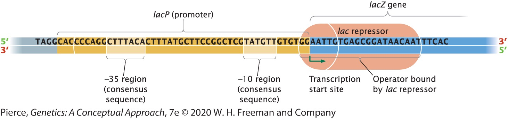

點擊放大
點擊放大
圖證 1｜Pierce 7e 圖 16.7：lac 操縱組的整體模型（負性可誘導）
Pierce 先呈現這張完整線路圖，接著才在「lac 突變」一節展示如何透過突變株與部分二倍體把圖中的每個零件推論出來。
從 Benjamin A. Pierce《Genetics: A Conceptual Approach》（第 7 版）第 9 章與第 16 章出發，拆解 Jacob 與 Monod 如何在沒有 DNA 定序技術的年代，靠突變株與 F′ 部分二倍體反推出 lac 操縱組的調控線路。
大腸桿菌平常為單倍體，無法測顯隱性；因此藉 F′ 質體接合把第二套 lac 區送進細胞，形成部分二倍體（局部合子）。
能跨兩條 DNA 分子互補或壓制的是可擴散的蛋白質（如 lacI）；只能影響同一條 DNA 相連基因的，則是 DNA 上的物理結合位點（如 lacO、lacP）。
Pierce 先在 16.2 前半直接呈現完整的 lac 線路圖（圖 16.7），再於「lac 突變」一節回頭用 5 類突變株證明每個元件確實存在。
在編排順序上，Pierce 採取的是「先模型、後推論」的概念導向路線：
點擊放大
Pierce 先呈現這張完整線路圖，接著才在「lac 突變」一節展示如何透過突變株與部分二倍體把圖中的每個零件推論出來。
大腸桿菌正常只有一條環狀染色體（單倍體），無法直接測試兩個突變等位基因之間的顯隱性與互補關係。因此 Pierce 在第 9 章先鋪陳細菌接合機制，說明研究者如何製造「對特定區域有兩份基因拷貝」的實驗材料：
 點擊放大
點擊放大
Hfr 細胞中的 F 因子不精確切除時會帶走鄰近染色體基因（如 lac 區）成為 F′ 細胞；F′ × F⁻ 接合後即得到帶有兩套 lac 基因座的部分二倍體，使顯隱性與順／反式互補分析成為可能。
位於不同條 DNA 分子上的正常拷貝，可以控制或挽救另一條 DNA 分子上的基因表現。
推論意義：該序列編碼的是可擴散的分子產物（例如在細胞質中移動的蛋白質），可同時作用於染色體與質體上的操縱組。
突變只能影響物理連接在同一條 DNA 分子上的結構基因表現，完全管不到另一條 DNA 分子。
推論意義：該序列不是製造可擴散蛋白的基因，而是 DNA 本身上的調控位點（結合位置或起跑點）。
lacZ⁺ lacY⁻ / lacZ⁻ lacY⁺ 在乳糖存在時可正常同時產生兩種酵素。lacI⁺ lacZ⁻ / lacI⁻ lacZ⁺ 只在乳糖存在時才合成 β-半乳糖苷酶（恢復正常可誘導狀態）。lacI⁺ 對 lacI⁻ 為顯性：只要有一份正常拷貝，就能把系統「關回」無乳糖時不表現的狀態，表示 lacI⁺ 的正常功能是主動抑制轉錄（負調控）。lacI⁺ 與唯一的 lacZ⁺ 位於不同條 DNA 分子卻能壓制其表現，證明 lacI 編碼一個可擴散的反式作用（trans acting）抑制蛋白。 點擊放大
點擊放大
染色體上的 lacI⁺ 雖與有缺陷的 lacZ⁻ 相連，但產生的正常抑制蛋白可擴散到質體上，與質體的 lacO⁺ 結合並關閉 lacZ⁺，直到乳糖出現才解除抑制。
lacIˢ lacZ⁺ lacY⁺ / lacI⁺ lacZ⁺ lacY⁺ 無論有沒有乳糖，都無法合成 β-半乳糖苷酶或通透酶。lacI⁺ 蛋白，只要 lacIˢ 死死占住兩套操作子，兩條 DNA 就全被關死——由此驗證抑制蛋白具備分開的 DNA 結合位點與誘導物結合位點（屬於別構蛋白 allosteric protein，Pierce 譯本作同位效應蛋白）。 點擊放大
點擊放大
lacIˢ 編碼的超抑制蛋白可擴散至細胞內兩條 DNA 分子的操作子上，且對乳糖（異乳糖）沒有反應，因此對 lacI⁺ 呈顯性抑制。
lacI⁺ lacO⁺ lacZ⁻ / lacI⁺ lacOᶜ lacZ⁺（圖 16.11a）→ 組成型（有無乳糖都製造 β-半乳糖苷酶，因功能完整的 lacZ⁺ 與 lacOᶜ 在同一條 DNA 上）。lacI⁺ lacO⁺ lacZ⁺ / lacI⁺ lacOᶜ lacZ⁻（圖 16.11b）→ 可誘導（只在有乳糖時才製造 β-半乳糖苷酶，因正常的 lacZ⁺ 與正常的 lacO⁺ 在同一條 DNA 上）。 點擊放大
點擊放大
將 lacOᶜ 與正常的 lacZ⁺ 放在同一條 DNA 上（a）會表現組成型合成；一旦把 lacOᶜ 改與無功能的 lacZ⁻ 相連（b），另一條上的 lacZ⁺ 依然受 lacO⁺ 正常調控，一舉證明 lacO 是順式作用元件。
lacI⁺ lacP⁺ lacZ⁺ / lacI⁺ lacP⁻ lacZ⁻ 可正常合成 β-半乳糖苷酶，而 lacI⁺ lacP⁻ lacZ⁺ / lacI⁺ lacP⁺ lacZ⁻ 無論有無乳糖都無法產生 β-半乳糖苷酶。Pierce 7e 英文原文 16.2 節給出的啟動子測試基因型為 lacI⁺ lacP⁺ lacZ⁺ / lacI⁺ lacP⁻ lacZ⁻（實務上亦測 lacI⁺ lacP⁺ lacZ⁺ / lacI⁺ lacP⁻ lacZ⁺）與 lacI⁺ lacP⁻ lacZ⁺ / lacI⁺ lacP⁺ lacZ⁻（不產生）；中文譯本將該兩組中的 lacZ⁺／lacZ⁻ 誤植對調，研讀時請以英文原文為準。
| 元件 | 突變型 | 單倍體表現型 | 部分二倍體關鍵測試與表現 | 順式／反式 | 推論出的生物學身分 |
|---|---|---|---|---|---|
| lacZ / lacY | lacZ⁻ / lacY⁻ | 失去單一酵素活性，另一酵素仍受正常調控 | Z⁺Y⁻ / Z⁻Y⁺ → 有乳糖時雙酵素皆正常合成 |
僅影響該基因產物 | 各自獨立編碼酵素的結構基因 |
| lacI | lacI⁻ | 組成型（永遠開） | I⁺Z⁻ / I⁻Z⁺ → 恢復正常可誘導（I⁺ 顯性） |
反式作用 | 製造可擴散抑制蛋白的調控基因（負調控） |
| lacI | lacIˢ | 不可誘導（永遠關） | IˢZ⁺Y⁺ / I⁺Z⁺Y⁺ → 無論有無乳糖皆關 |
反式作用 | 證實抑制蛋白另有獨立的誘導物結合位點 |
| lacO | lacOᶜ | 組成型（永遠開） | O⁺Z⁻ / OᶜZ⁺ → 組成型；O⁺Z⁺ / OᶜZ⁻ → 可誘導 |
順式作用 | 抑制蛋白直接結合的 DNA 操作子位點 |
| lacP | lacP⁻ | 不可誘導（永遠關） | P⁺Z⁺ / P⁻Z⁻ → 正常；P⁻Z⁺ / P⁺Z⁻ → 永遠關 |
順式作用 | RNA 聚合酶結合的 DNA 啟動子位點 |
既然乳糖需要乳糖通透酶才能進入細胞，而且必須由 β-半乳糖苷酶把乳糖轉成真正的誘導物異乳糖（allolactose），那麼當操縱組在無乳糖時處於關閉狀態，第一批乳糖怎麼進細胞、又怎麼變成異乳糖來拉開抑制蛋白？
Pierce 由此指出推論結果：抑制蛋白的阻遏從未 100% 關死轉錄，即使處於關閉狀態，細胞內仍有極低量的基礎漏轉錄（leaky transcription），維持少數通透酶與 β-半乳糖苷酶分子作為啟動火種。
除了正文以 lac 操縱組示範推論邏輯外，Pierce 把更多純數據反推題安排在 Ch16 章末，例如：Worked Problem 1（fox 操縱組突變表反推啟動子、調控基因與結構基因）、第 25 題（mmm 可抑制操縱組）、第 26 題（引述 Engelsberg 1965 阿拉伯糖 ara 操縱組部分二倍體數據，推論正調控與反式調節蛋白），以及 第 27 題（Ramakrishnan & Adelberg 1965 纈胺酸操縱組部分二倍體數據判讀）。

點擊放大Jacob 與 Monod 當初只能透過遺傳作圖得知 lacO 位於 lacZ 附近；後來核苷酸定序才證實操作子其實與啟動子 3′ 端（−10 區附近）及 lacZ 5′ 端（+1 下游）重疊，直接解釋了抑制蛋白為何能從物理空間上阻擋 RNA 聚合酶。
Pierce 的強項是用清晰故事與圖解建立概念模型，因此採「先給操縱組模型、再用部分二倍體驗證」。如果要在課堂上讓學生先不看答案、純靠突變株表型自己反推出線路圖（例如區分 lacI⁻ 與 lacOᶜ），可搭配 Griffiths《Introduction to Genetic Analysis》Ch11 的實驗數據題組一起使用。